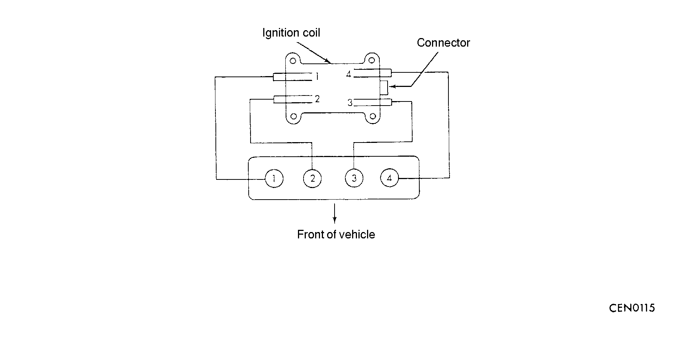

![[Previous]](https://mitsubishitechinfo.com/data/F24S/BUTTONS/fprevg.png)
![[Next]](https://mitsubishitechinfo.com/data/F24S/BUTTONS/fnextg.png)
IGNITION SYSTEM <2.0L ENGINE (NON-TURBO)>
GENERAL INFORMATION
This engine uses an electronic ignition system. Basic ignition timing is not adjustable.
The powertrain control module (PCM) judges spark advance. The ignition system's three main components are the coil pack, crankshaft position sensor, and camshaft position sensor.
Both the crankshaft position sensor and camshaft position sensor are "Hall-effect" devices. The camshaft position sensor and crankshaft position sensor generate pulses that are input to the PCM.
The PCM determines crankshaft position from these sensors.
The PCM calculates injector sequence and ignition timing from crankshaft position.
The engine's firing order is 1-3-4-2.

IGNITION COIL SPECIFICATION
|
Items |
Specifications |
| Type |
Molded 2 coil |
|
SPARK PLUG SPECIFICATION
| Items |
Specifications |
| Type |
RC9YC5 (CHAMPION) |
|